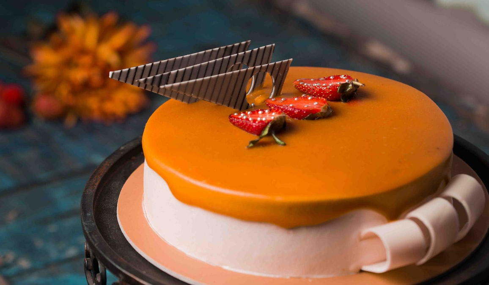

THIS CARAMEL CAKE RECIPE IS PERFECT FOR THAT DIE HARD CARAMEL FAN IN YOUR LIFE. HOMEMADE CARAMEL SAUCE IS USED IN THE CAKE LAYERS, FROSTING, AND THE DRIP! I am obsessed with how pretty this Caramel Cake turned out. Not only the perfectly smooth cake combed sides, but the caramel drip that was just the right consistency to not drip all the way down and create a hot mess. It’s not often things work out smoothly over here, so I need to celebrate it when it happens! There are a number of different ways you can make caramel, but I’m going to tell you about my favourite way to do it. It requires very few ingredients and just a bit of patience.
The Most Amazing Red Velvet Cake for years.We’ve adapted our recipe for The Most Amazing Chocolate cake to bring you the perfect red velvet cake we know you will love, just as you’ve loved the original chocolate version. It’s not simply a chocolate or a white cake dyed red. It has added acidity to give it a flavor like no other. Many people wonder, is red velvet cake really just a chocolate cake? While it certainly has a chocolate flavor and cocoa powder as a main ingredient, a red velvet cake is not a chocolate cake. It has far less cocoa powder in it than a traditional chocolate cake recipe.
When all you want is a simple, classic chocolate cupcake, this recipe does the trick. Moist, tender dark chocolate cake topped with smooth, creamy dark chocolate frosting feeds the chocoholic in all of us. These cupcakes almost didn’t make it to the dance. They tortured me while baking, with that amazing aroma coming from the oven. Then waiting for them to cool, ok, maybe one didn’t get to cool completely. After all, is there anything better than warm cake on a cool morning